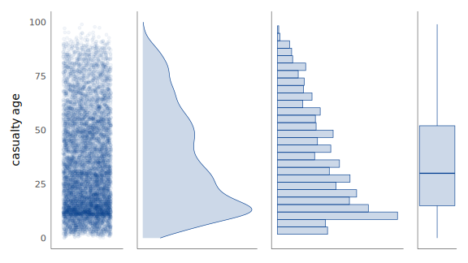
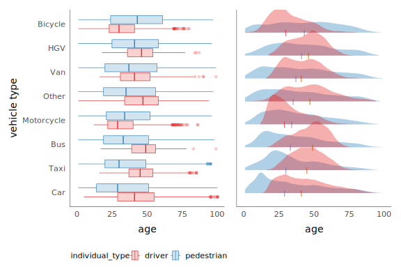
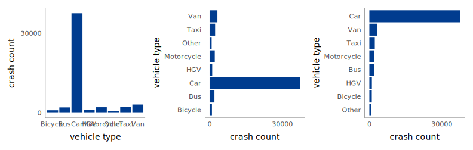
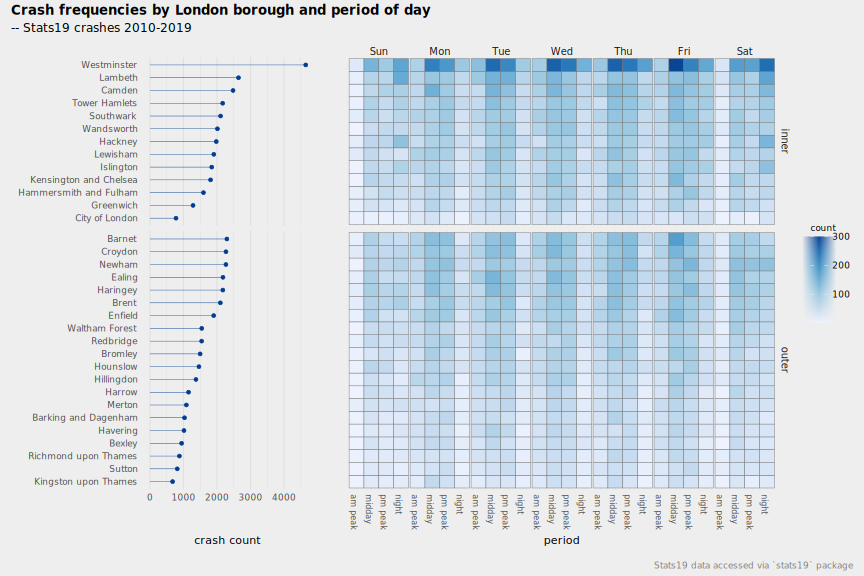
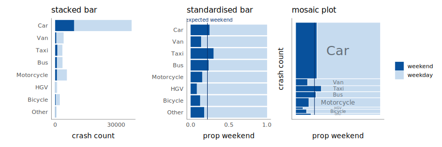
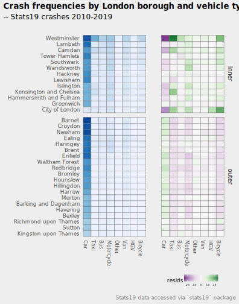
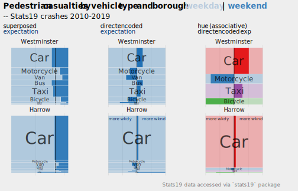
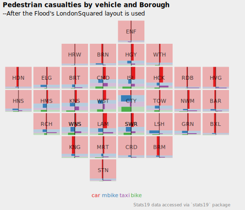

4 Exploratory Data Analysis
By the end of this chapter you should gain the following knowledge and practical skills.
4.1 Introduction
Exploratory Data Analysis (EDA) is an approach to analysis which aims to expose the properties and structure of a dataset, and from here suggest directions for analytic inquiry. In an EDA, relationships are quickly inferred, anomalies labelled, assumptions tested and new hypotheses and ideas formulated. EDA relies heavily on visual approaches to analysis; it is common to generate many dozens of (often throwaway) data graphics.
This chapter demonstrates how the concepts and principles introduced previously, of data types and their visual encoding, can be applied to support EDA. It does so by analysing STATS19, a dataset containing detailed information on every reported road traffic crash in Great Britain that resulted in personal injury. STATS19 is highly detailed, with many categorical variables. This chapter starts by revisiting commonly used chart idioms (Munzner 2014) for summarising within-variable variation and between-variable co-variation in a dataset. It then focuses more directly on the STATS19 case, and how detailed comparison across many categorical variables can be effected using colour, layout and statistical computation.
4.2 Concepts
4.2.1 Exploratory data analysis and statistical graphics
The simple graph has brought more information to the data analyst’s mind than any other device.
John Tukey
In an Exploratory Data Analysis (EDA), graphical and statistical summaries are variously used to build knowledge and understanding of a dataset. The goal of EDA is to infer relationships, identify anomalies and test new ideas and hypotheses; it is a knowlegde-building activity. Rather than a formal set of techniques, EDA should be considered an approach to analysis. It aims to reveal the underlying properties of variables in a dataset (central tendency and dispersion) and their structure (how variables relate to one another) and from there formulate hypotheses to be investigated.
Wickham and Grolemund (2017) identify two main questions that an EDA should address:
- What type of variation occurs within variables of a dataset?
- What type of covariation occurs between variables of a dataset?
When summarising within-variable variation, we are interested in a variable’s spread or dispersion and its location within this distribution (central tendency). Different statistics can be applied, but a familiar distinction is between measures of central tendency that are or are not robust to outliers (e.g. mode and median versus mean). Correlation statistics are most obviously applied when studying between-variable covariation in variables measured on inerval and ratio scales, but other statistics, such as odds ratios and chi-square tests are commonly used when studying covariation in categorical data.
Decisions around which statistic to use depend on a variable’s measurement-level (e.g. Table 4.1). As demonstrated by Anscombe’s quartet (Anscombe 1973), statistical summaries can hide important structure, or assume structure that doesn’t exist. None of the measures of central tendency in Table 4.1 would expose whether a variable for instance is multi-modal and only when studying all measures of central tendency and dispersion together might it be possible to guess at the presence of outliers that could undermine statistical assumptions. It is for this reason that data visualization is seen as intrinsic to EDA (Tukey 1977).
| Measurement | Statistics | Chart idiom |
|---|---|---|
| Within-variable variation | ||
| Nominal | mode | entropy | bar charts, dot plots ... |
| Ordinal | median | percentile | bar charts, dot plots ... |
| Continuous | mean | variance | histograms, box plots, density plots ... |
| Between-variable variation | ||
| Nominal | contingency tables | mosaic/spine plots ... |
| Ordinal | rank correlation | slope/bump charts ... |
| Continuous | correlation | scatterplots, parallel coordinate plots ... |
4.2.2 Plots for continuous variables
Within-variable variation: histograms, density plots, boxplots
Figure 4.1 presents statistical graphics that are commonly used to show continuous variables measured on a ratio and interval scale – in this instance the age of casualty for a random sample of Stast19 road crashes (casualty_age).
In the top row is a strip-plot. Every observation is displayed as a dot and mapped to x-position, with transparency and a random vertical perturbation applied to resolve occlusion due to overlapping observations. Although strip-plots scale poorly, the advantage is that all observations are displayed without the need to impose an aggregation. It is possible to visually identify the location of the distribution – denser dots towards 20-25 age range – but also that there is a degree of spread across the age values.
Histograms were used in the previous chapter when analysing the 2019 UK General Election dataset. Histograms partition continuous variables into equal-range bins and observations in each bin are counted. These counts are encoded on an aligned scale using bar height. Increasing the size of the bins increases the resolution of the graphical summary. If reasonable decisions are made around choice of bin, histograms give distributions a shape that is expressive. It is easy to identify the location of a distribution and, in using length on aligned scale to encode frequency, estimate relative densities between different parts of the distribution. Different from the strip-plot, the histogram allows us to intuit that despite the heavy spread, the distribution of casualty_age is right-skewed, and we’d expect this given the location of the mean (36 years) relative to the median (33 years).
A problem with histograms is the potential for discontinuities and artificial edge-effects around the bins. Density plots overcome this and can be thought of as smoothed histograms. They show the probability density function of a variable – the relative amount of probability attached to each value of casualty_age. From glancing at the density plots an overall shape to the distribution can be immediately derived. It is also possible to infer statistical properties: the mode of the distribution (the highest density), the mean (by visual averaging) and median (finding the midpoint of the area under the curve). Density plots are better suited to datasets that contain a reasonably large number of observations and due to the smoothing function it is possible to generate a density plot that suggests nonsensical values (e.g. negative ages in this case if the plot range hadn’t been censored).
Finally, boxplots (McGill and Larsen 1978) encode the statistical properties inferred from strip-plots, histograms and density plots directly. The box is the interquartile range (IQR) of the casualty_age variable, the vertical line splitting the box is the median, and the whiskers are placed at observations \leq 1.5*IQR. Whilst we lose important information around the shape of a distribution, box-plots are space-efficient and useful for comparing many distributions at once.

Since the average age of road casualties is quite low, it may be instructive to quickly explore the distribution of casualty_age conditioning on another variable and differentiating between variable values using colour. Figure 4.2 displays boxplots and denisty plots of the location and spread in casualty_age by vehicle and casualty_class for all crashes involving pedestrians. A noteworthy pattern is that riders of bicycles and motorcycles tend to be younger than the pedestrians they are contacting with, whereas for buses, taxis, HGVs and cars the reverse is true. Pedestrians involved in crashes with cars are especially skewed towards the younger ages. Although less space efficient, the density plots display richer information around the nature of the driver / pedestrian age distributions.

It is common in an EDA to quickly compare associations between many quantitive variables in a dataset using scatterplot matrices or alternatively parallel coordinate plots. We will use both in chapters 6 and 7 when building models that attempt to formally structure and explain between-variable covariation.
4.2.3 Plots for categorical variables
Within-variable variation: bars, dotplots, heatmaps
With categorical variables we are interested in exploring how relative frequencies distribute across the variable’s categories. Bar charts are most commonly used. As established in the previous session, length is an efficient visual channel for encoding quantities, counts in this case. Often it is useful to flip bar charts on their side so that category labels are arranged horizontally for ease of reading and, unless there is a natural ordering to categories, arrange the bars in descending order based on their frequency, as in Figure 4.3.

Bar charts are effective at conveying frequencies where the number of categories is reasonably small. For summarising frequencies across many categories, alternative chart types that minimise non-data-ink, such as Cleveland dot plots may be appropriate. The left plot in Figure 4.4 displays pedestrian crash counts for boroughs in London, ordered by crash frequency and grouped by whether boroughs are in inner- or outer- London. To the right, dots for crashes recorded weekend | weekday are added. The addition of lines to connect dots is a useful stratgey for emphasising the relative differences between time periods by borough. Although a consistent pattern is of greater crash counts during weekdays, the gap is less obvious four outer London boroughs; there may be relatively more pedestrian crashes occuring in these boroughs at weekends. Finally, a heatmap with the same ordering and grouping of boroughs, but with columns coloured according to crash frequencies by vehicle type. Remembering Munzner (2014)’s ordering of visual channels, we trade-off some precision in estimation when encoding frequencies in heatmaps; Stevens’s power estimates for the perception of changes in lightness were n~0.5. The difficulty when making comparisons between vehicle type is that by far the most common vehicle type involved in pedestrian crashes is cars, any variation between vehicle types outside of this is imperceptible.

Between-variable covariation: standardised bars and mosaic plots
In Figure 4.4 we began to make between category comparison; we asked whether there are relatively greater or fewer crashes by time period or vehicle type in certain boroughs than others. There are chart idioms that explicitly support these sorts of analysis tasks. Figure 4.5 compares pedestrian crash frequencies by vehicle type involved and injury severity (of the pedestrian). First, stacked bars are ordered by frequency, distinguishing injury severity using colour value. Injury severity is an ordinal variable and the choice of colour in Figure 4.5 reflects this order – dark red for KSI, light red for slight. Cars are by far the dominant travel mode, causing the largest number of slight and serious injuries to pedestrians. Whether or not cars result in more severe injury rates than other travel modes is not clear from the left-most chart. Length encodes absolute crash counts effectively but relative comparison of injury severity between vehicle types is challenging. In standardised bars the absolute length of bars is fixed and bars are split according to proportional injury severity (middle). Now we see that relative injury severity of pedestrians – KSI as a proportion of all crashes – varies slightly between modes (c.22% Taxis - c.26% Buses) except for HGVs where around 40% of crashes result in a serious injury or fatality to the pedestrian. However, we lose a sense of the absolute numbers involved.

Failing to encode information on absolute number (amount of information) is a problem in EDA, especially when comparisons over many category combinations are made. For combinations that are rare, for example bicycle-pedestrian casualties, it may only take a small number observations in a particular direction to change the KSI rate. Since proportional summaries are agnostic to sample size, they can induce false discoveries, overemphasising patterns that may be unlikely to replicate. It is sometimes desirable, then, to update standardised bar charts so that they are weighted by frequency: to make more visually salient those categories that occur more often and visually downweight those that occur less often. This is possible using mosaic plots (Friendly 1992). Bar widths and heights are allowed to vary; so bar area is proportional to absolute number of observations and bars are further subdivided for relative comparison across category values. Mosaic plots are useful tools for exploratory analysis. That they are space-efficient and regularly sized (squarified) means they can be flexibly laid out for comparison.
The mosaic plot in Figure 4.5 was generated using the ggmosaic package, an extension to ggplot2.
Computing relative and absolute differences
When studying the plots in Figure 4.5, there are some implied questions: Does casualty severity vary depending on the type of vehicle involved in the crash? For which vehicle types is injury severity the highest or lowest? An imbalance is clearly to be expected, but we may start by assuming that injury severity rates, the proportion of pedestrian injuries that are KSI, varies independently of vehicle type and look to quantify and locate any imbalance in these proportions. This happens automatically when comparing the relative widths of the dark red bars in Figure 4.5. Annotating with an expectation, for example, the injury severity rate for all pedestrian casualties (middle plot), helps to further locate differences from expectation for specific vehicles.
Effect size estimates could also be computed directly using risk ratios (RR) – comparing the observed severity rates by vehicle type against an expectation of independence of severity rates by vehicle type. From this, we could find that the RR for HGVs is 1.64: a crash involving an HGV is 1.64 times more likely to result in a fatality or serious injury to the pedestrian than one not involving an HGV. Alternatively, we could calculate signed chi-score residuals (Visalingam 1981), a measure of effect size that is sensitive both to absolute and relative differences from expectation. Expected values are counts calculated for each observation (category combination of vehicle type and injury severity). Observations (O_i ... O_n) are then compared to expected values (E_i ... E_n) as below:
\chi=\frac{O_i - E_i}{\sqrt{E_i}}
The way in which the differences (residuals) between observed and expected values are standardised in the denominator is important. If the denominator was simply the raw expected value, the residuals would express the proportional difference between each observation and its expected value. The denominator is instead transformed using the square root (\sqrt{E_i}), which has the effect of inflating smaller expected values and squashing larger expected values, thereby giving greater saliency to differences that are large in both relative and absolute number. The mosaic plot in effect does this visually.
Expected values are calculated in the same way as the standard chi-square statistic that tests for independence – in this case, that counts of crashes by vehicle type distribute independently of injury severity (Slight or KSI) – and can be derived from a frequency table of category combinations:
E_i = \frac{C_i \times R_i}{GT}
So for an observed value (O_i), C_i is its column total; R_i is its row total; and GT is the grand total. Below is this table updated with expected values and signed-chi-scores. A score >0 means that casualty counts for that injury type and vehicle is greater than expected; a score <0 means casualty counts for that injury type and vehicle is less than expected. The signed chi-square residuals have mathematical properties and can be interpreted as any standard score. They are assumed to have a mean \sim1 and standard deviation of \sim0. Residuals are therefore analogous to standard deviation units from the expected mean.
| Vehicle type | KSI | Slight | Row Total | KSI Exp | Slight Exp | KSI Resid | Slight Resid |
|---|---|---|---|---|---|---|---|
| Car | 42305 | 137924 | 180229 | 43195 | 137034 | -4.28 | 2.40 |
| Van | 3786 | 11422 | 15208 | 3645 | 11563 | 2.34 | -1.31 |
| Taxi | 2580 | 9188 | 11768 | 2820 | 8948 | -4.53 | 2.54 |
| Bus | 2951 | 8425 | 11376 | 2726 | 8650 | 4.30 | -2.41 |
| Motorcycle | 2137 | 7102 | 9239 | 2214 | 7025 | -1.64 | 0.92 |
| HGV | 2030 | 3195 | 5225 | 1252 | 3973 | 21.98 | -12.34 |
| Other | 1096 | 3302 | 4398 | 1054 | 3344 | 1.29 | -0.73 |
| Bicycle | 1033 | 3184 | 4217 | 1011 | 3206 | 0.70 | -0.39 |
| Column Total | 57918 | 183742 | NA | NA | NA | NA | NA |
The benefit for EDA is that the signed-scores are very quick and easy to compute and can be derived from frequency tables without applying heavy prior knowledge. They help to identify and locate anomalies in individual data values in a way that is sensitive to both absolute and relative numbers. They are often used in cartographic design to emphasise spatial units that deviate from expectation [refs].
Updating graphics to show deviation from expectation
When comparing crashes on vehicle type (Figure 4.4) the dominating effect of cars made additional patterns between boroughs visually unintelligible. Figure 4.6 updates the heatmaps with signed residuals encoded using a diverging colour scheme – purple for cells with fewer crash counts than expected, green for cells with more crash counts than expected. The assumption, the modelled expectation, is that crash counts by borough distribute independently of vehicle type. Laying out the heatmap such that inner and outer London boroughs are grouped for comparison is instructive: fewer than expected crashes in inner London are recorded for cars; greater than expected for all other vehicle types but especially taxis and bicycles. This pattern is strongest (largest residuals) for very central, job-rich boroughs – Westminster, City of London and, to a lesser extent, Camden.

4.2.4 Supporting comparison with layout and colour
A key role for visual methods in EDA is in supporting comparison. Three strategies typically deployed are juxtaposition, superposition and direct encoding (see Gleicher and Roberts 2011). Table 4.3 defines each and suggests how they can be implemented in ggplot2. For using juxtaposition, control over how chart elements are arranged and laid out is necessary. View composition with ggplot2 can be achieved using faceting (geom_facet), where plots are conditioned on categorical variables, or using the patchwork package for more flexible plot arrangements
| Strategy | Function | Use |
|---|---|---|
| Juxtaposition | faceting | Create separate plots in rows and/or columns by conditioning on a categorical variable. Each plot has same encoding and coordinate space. |
| Juxtaposition | patchwork pkg | Flexibly arrange plots of different data types, encodings and coordinate space. |
| Superposition | geoms | Layering marks on top of each other. Marks may be of different data types but must share the same coordinate space. |
| Direct encoding | NA | No strategy specialised to direct encoding. Often variables cross 0, so diverging schemes, or graphics with clearly annotated and symbolised thresholds (Swing to the right / left in the Washington Post graphic in chapter 3) are used. |
As with most visualization design, these strategies require careful decision-making. In ?fig-mosaic-boroughs mosaic plots are used to compare pedestrian crashes occuring in London boroughs by vehicle type. Two very different London boroughs are compared, Westminster and Harrow. As well as scaling bar height by vehicle type, widths vary according to whether crashes took place during weekdays or weekends. Whilst the modal vehicle type involved in pedestrian injuries is the same for both boroughs (cars), cars are more dominant for crashes recorded in the outer London borough of Harrow. Pedestrian crashes involving cars in Westminster occur relatively more frequently on weekends whereas crashes involving bicycles, vans and motorcycles occur relatively more frequently on weekdays.
To support the weekday/weeked comparison, we could superimpose a line corresponding to the expected proportion of weekend crashes in a borough given the London average (left plot in ?fig-mosaic-boroughs). Alternatively we could directly encode difference from expectation by centering the dark bars and varying the widths according to how much the relative number of weekend crashes is above (oriented to right) or below (oriented to left) this expectation (middle plot). The latter approach helps highlight boroughs that are different from the London average: the more dark blue the more atypical that borough is. The largest differences from expectation are in Westminster, with crashes involving vans, mototcycles and bicycles overrepresented amongst weekdays. Finally, if we are to compare across all 33 London boroughs we may chose to reduce some of the detail in the graphic and focus on a subset of vehicle types. As vehicle type is a categorical nominal variable it may also be sensible to encode that variable using colour hue to help asociate vehicle types between boroughs.
::: {.cell} ::: {.cell-output-display}  ::: :::
?fig-mosaic-boroughs-alpha shows this updated design with borooughs grouped by whether they are in inner or outer London. This grouping usefully reinforces the distinctive pattern of vehicle categories involved in pedestrian crashes. In inner London, crashes between pedestrians and vehicles other than cars are in relative terms much more common, with motorcycles and bicycles overrepresented amongst crashes taking place during weekdays and cars and taxis very much overrepresented amongst weekend crashes.
::: {.cell} ::: {.cell-output-display}  ::: :::
::: :::
Semi-geographic layouts
The alphabetical layout of boroughs helps with look-up-type tasks, but since we have already identified that patterns of pedestrian injuries by vehicle type varies by central-inner-outer London, we could further support this comparison by laying out the mosaic plots with a spatial arrangement, as in Figure 4.7. This ‘map’ clearly looks different from standard maps of London that use a precise geographic arrangement. When studying social phenomena, high levels of precision are not always needed. Relaxing geography frees up space to introduce richer, more complex designs. In the layout in Figure 4.7, taken from AfterTheFlood, each borough is represented as a square of regular size and arranged in its approximate geographic position, allowing the central-inner-outer London distinctions to be made more effectively.

4.3 Techniques
The technical element to this session continues in our analysis of STATS19 road crash data. After importing and describing the dataset, you will generate statistical summaries and data graphics for analysing pedestrian casualties. You will focus on visual design choices – colour and layout – that support comparison of pedestrian casualties, conditioning on numerous categorical variables held in the STATS19 dataset.
- Download the 04-template.qmd file for this session and save it to the
reportsfolder of yourvis4sdsproject. - Open your
vis4sdsproject in RStudio and load the template file by clickingFile>Open File ...>reports/04-template.qmd.
4.3.1 Import
The template file lists the required packages – tidyverse, sf and also the stats19 package for downloading and formatting the road crash data. STATS19 is a form used by the police to record road crashes that result in injury. Raw data are released by the Department for Transport as a series of .csv files spread across numerous .zip folders. This makes working with the dataset somewhat tedious and behind the stats19 package is some laborious work combining, recoding and relabelling the raw data files.
STATS19 data are organised into three tables:
-
Accidents (or Crashes): Each observation is a recorded road crash with a unique identifier (
accident_index), date (date), time (time) and location (longitude,latitude). Many other characteristics associated with the crashes are also stored in this table. -
Casualties: Each observation is a recorded casualty that resulted from a road crash. The Crashes and Casualties data can be linked via the
accident_indexvariable. As well ascasualty_severity(Slight,Serious,Fatal), information on casualty demographics and other characteristics is stored in this table. -
Vehicles: Each observation is a vehicle involved in a crash. Again Vehicles can be linked with Crashes and Casualties via the
accident_indexvariable. As well as the vehicle type and manoeuvre being made, information on driver characteristics is recorded in this table.
In 04-template.qmd is code for downloading each of these tables using the stats19 package’s API. You will collect data on crashes, casualties and vehicles for 2010-2019, so these datasets take a little time to download. For this reason, I suggest that once downloaded you write the data out and read in as .fst. In fact I have made a version of this available for download on a separate repository in case you are having problems with the stats19 download.
The data analysis that follows is concerned with pedestrian-vehicle crashes. Pedestrian casualties resulting from those crashes are filtered with the purpose of exploring how casualties vary by the socio-economic characteristics of the area in which the crashes took place.
The first data processing task is to generate a subset of data describing these casualties and the crashes and vehicles to which they are linked. The crashes (crashes_all) and casualties (casualties_all) tables are joined and pedestrian casualties filtered filter(casualty_type=="Pedestrian"). This new table is then joined on vehicles (vehicles_all).
There are some simplifications and assumptions made here. Some pedestrian crashes involve many vehicles, but ideally for the analysis we need a single vehicle (and vehicle type) to be attributed to each crash. For each casualty, the largest vehicle involved in the crash is assigned. This is achieved by filtering all vehicle records in vehicles_all involved in a pedestrian casualty, a semi_join on the pedestrian casualty table. We then recode the vehicle_type variable as an ordered factor, group the vehicles table by the crash identifier (accident_index), and for each crash identify the largest vehicle involved, and then filter these largest vehicles. It is common to have several vehicles of the same type involved in a crash, so a final filter is on a vehicle_reference variable. This is an integer variable starting from 1 to n assigned to each vehicle involved in the crash. I do not know whether there is an inherent order to this variable, but make the assumption that vehicle_reference=1 is the main vehicle involved in the crash. So single vehicles are linked to single casualties based first on the largest vehicle involved and then on vehicle_reference.